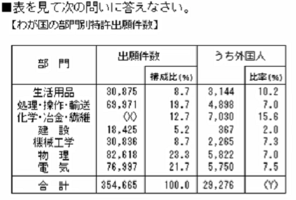

0.ゲーム数学入門（α版） / 13. 式の作成_確認問題（Zenn から 2026-10-30 に保存。本文の最終更新 2025-06-11T16:30:52.115+09:00）
以下の文章題を数式に直し、問に答えよ。
1.
Pクラスは全体の3/4が60歳以上。Qクラスは全体の3/5が60歳以上である。両クラスとも60未満が10人であるとき、全体の人数はPクラスがQクラスより何人多いか。(2024卒ゲームSPI)
2.
父と母の年齢差は7歳で、父、母の年齢はそれぞれ子の年齢の6倍、5倍である。このとき、子の年齢は何歳か。(2024卒ゲームSPI)
3.
現在Pは10歳であり、6年後にPの年齢はQの年齢の1/2になる。Pの年齢がQの年齢の1/3にあたるのはPが何歳のときか。(2024卒ゲームSPI)
4.
ある観光地を訪れた人のうち、カメラを持っていた人は52人、ビデオを持っていた人は28人であり、カメラを持っていた人のうち1/4人はビデオも持っていた。ビデオを持っていたがカメラを持っていなかった人は何人か。(2024卒ゲームSPI)

1
よって、PがQより15人多い。
2
よって、子の年齢は7歳。
3
P=8歳のとき、Q=24歳なので、P=8歳のとき。
4
上記が分かるので、
5
6
7
まず、等加速度で加速した後に同じ加速度で減速するので、
減速し始める際の移動時間は1.5時間であり、距離は15kmである。
等加速度運動の距離の公式より、
が成り立つので、
等加速度運動の速度の公式より、
より、